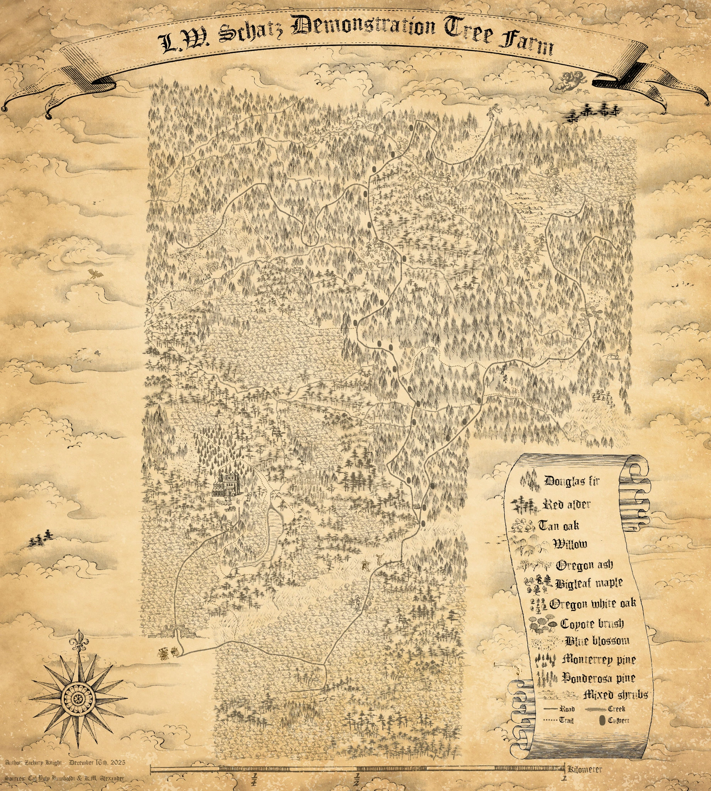

Illustrated mapping
L. W. Schatz Demonstration Tree Farm
Fantasy-inspired cartography · dominant tree species across the property

About this map
A fantasy-inspired illustrated map of the L. W. Schatz Demonstration Tree Farm that also communicates real information about the property. The different tree symbols identify the dominant tree species in its various regions, while the paths and streams provide geographic context. A parchment background and hand-drawn legend give the map its storybook appearance.